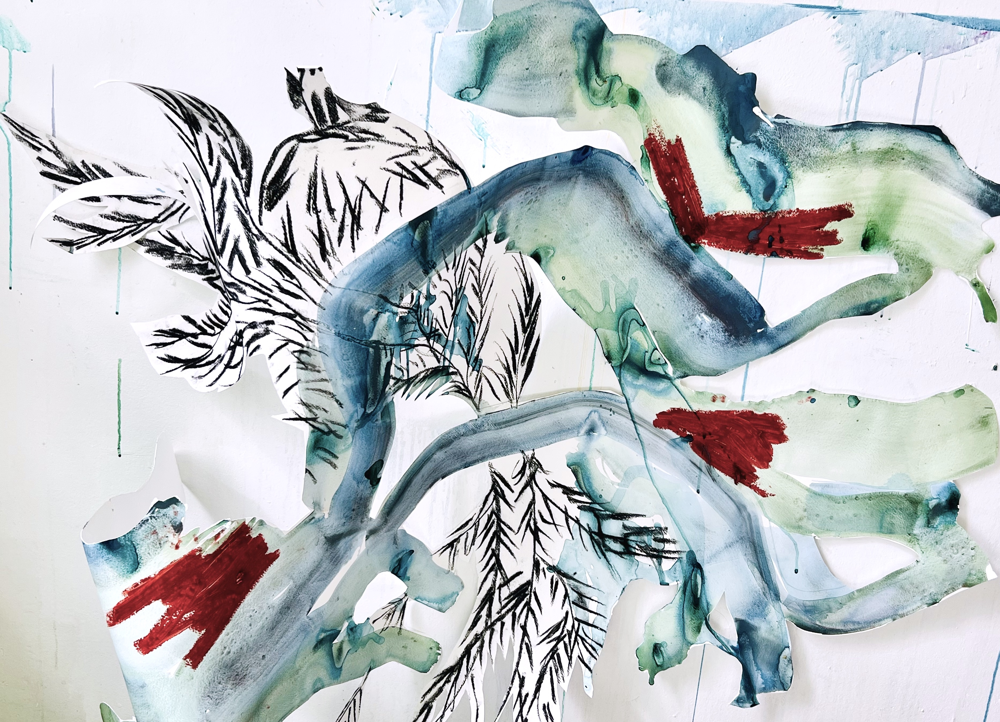

Découpe 12026Diluted acrylic on paper, watercolour pencilVariable dimensions, approximately 120 × 30 cm
 Découpe 22026Diluted acrylic on paper, watercolour pencilVariable dimensions, approximately 160 × 30 cm
Découpe 32026Diluted acrylic on paper, watercolour pencilVariable dimensions, approximately 100 × 20 cm
Réceptacle 22026Glazed stoneware · unique piece at the intersection of sculpture and functional object32 × 33 × 10 cm
Réceptacle bleue2026Glazed stoneware · unique piece at the intersection of sculpture and functional object40 × 40 × 15 cm